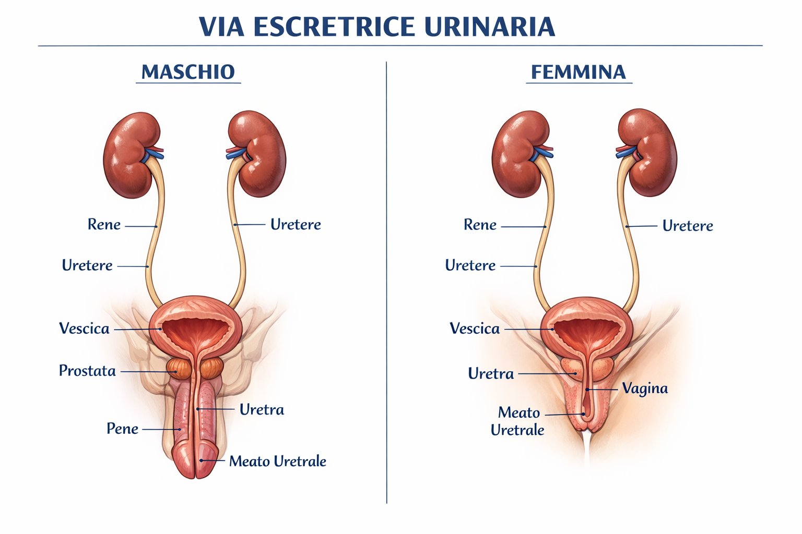

Prof. Giacomo Novara — Urologia, Università di Padova
Tumore dell'Alta Via Escretrice
Carcinoma uroteliale di calici, pelvi renale e uretere
L'alta via escretrice comprende calici renali, pelvi renale e uretere — tutto ciò che si trova sopra la giunzione uretero-vescicale. La neoplasia uroteliale dell'alta via (UTUC) è biologicamente analoga al carcinoma vescicale, ma anatomicamente distinta e con specifiche implicazioni terapeutiche e di sorveglianza.
🗺️ Anatomia della via escretrice

Per alta via escretrice si intendono i calici, la pelvi renale e l'uretere fino alla giunzione uretero-vescicale. Al contrario, la bassa via escretrice è costituita da vescica ed uretra.
L'epitelio uroteliale riveste tutta la via escretrice dalla pelvi renale all'uretra prossimale: è lo stesso tipo cellulare che genera i tumori in tutte queste sedi — concetto alla base della cosiddetta malattia di campo uroteliale.
📊 Epidemiologia
5%
Di tutti i tumori uroteliali (vs 95% vescicali)
2 : 1
Rapporto maschi/femmine
2–5%
Bilateralità — rara ma da escludere
17%
Associazione con sindrome di Lynch (HNPCC)
Gli UTUC condividono gli stessi fattori di rischio del carcinoma vescicale: fumo di sigaretta (principale), esposizioni occupazionali ad ammine aromatiche, analgesici contenenti fenacetina (oggi ritirati), acido aristolochico (erboristeria cinese tradizionale — fortemente associato agli UTUC dell'uretere). L'associazione con la sindrome di Lynch (deficit dei geni di mismatch repair — MLH1, MSH2) è significativamente più alta che nel carcinoma vescicale.
Malattia di campo uroteliale: chi ha avuto un UTUC ha un rischio significativo di sviluppare un carcinoma vescicale metacrono (30–50%), mentre chi ha avuto un tumore vescicale ha un rischio più basso di sviluppare un UTUC (2–4%). Questo asimmetria è spiegata dal flusso centrifugo delle cellule uroteliali esfoliate.
🩺 Sintomi e diagnosi
La macroematuria indolore è il sintomo di presentazione nel 70–80% degli UTUC. In presenza di macroematuria con imaging negativo per calcoli, la diagnosi differenziale deve includere l'UTUC e impone la uro-TC con fase escretoria.
La colica renale può essere presente quando coaguli ematici ostruiscono la pelvi renale o l'uretere, mimando la sintomatologia litiasica. Questa situazione genera spesso un ritardo diagnostico.
⚠️ Trappola diagnostica: Un paziente con colica renale e imaging non chiaro per calcolo deve eseguire uro-TC con fase escretoria — il carcinoma uroteliale dell'alta via può manifestarsi con una colica da coaguli ostruttivi e può essere confuso con un calcolo radiotrasparente.
1
Uro-TC multifase con contrasto
Esame di riferimento. Fase escretoria fondamentale per visualizzare il lume della via escretrice (urotac). Sensibilità ~96% per lesioni ≥5 mm.
2
Citologia urinaria / citologia selettiva
Cateterizzazione uretero-renale con raccolta di urine dalla pelvi omolaterale. Alta specificità per tumori ad alto grado.
3
Ureteroscopia diagnostica + biopsia
Visione diretta della lesione con ureteroscopio flessibile. Biopsia in pinza per tipizzazione istologica e grading. Rischio di seeding nel sito di ingresso (argomentazione a favore del clipping precoce in nefroureterectomia).
4
Cistoscopia
Da eseguire sempre per escludere lesioni vescicali sincrone (malattia di campo).
🔪 Nefroureterectomia radicale — trattamento standard
La nefroureterectomia radicale (NUR) con exeresi del collaretto vescicale è il trattamento standard degli UTUC non metastatici non suscettibili di approccio conservativo. Include la rimozione in blocco di rene, grasso perirenale, uretere intero fino alla giunzione vescicale e collaretto vescicale periostiale.
🤖
Approccio robotico/laparoscopico
Standard nei centri di alto volume
Riduzione delle perdite ematiche, degenza più breve
Gestione del distal uretere: approccio intravescicale o extravescicale (stapling)
✂️
Principi oncologici chiave
Clipping precoce dell'uretere dopo isolamento del peduncolo vascolare (anti-seeding)
Rimozione completa dell'uretere fino all'ostio — mai lasciare moncone
Linfoadenectomia locoregionale per tumori ≥ pT2
💉
Instillazione endovescicale post-op
Singola instillazione di mitomicina C entro 24h dalla NUR
Riduce il rischio di recidiva vescicale del 40% (studio ODMIT-C)
Oggi raccomandata dalle LG EAU come standard
🎯 Trattamento conservativo (kidney-sparing)
In pazienti altamente selezionati è possibile un approccio conservativo con intento di preservare il rene ipsilaterale.
Follow-up: ureteroscopia + citologia ogni 3 mesi per 2 anni
🎓 Esperienza del Centro di Padova
Il gruppo di Urologia di Padova ha maturato una delle esperienze italiane più ampie nel trattamento conservativo degli UTUC.
40
Pazienti trattati in elezione
80%
Reni preservati a lungo termine
3 mesi
Intervallo follow-up ureteroscopico
💊 Chemioterapia adiuvante — studio POUT
Lo studio randomizzato POUT (Lancet 2020) ha dimostrato che la chemioterapia adiuvante con gemcitabina + cisplatino (o carboplatino) per 4 cicli riduce significativamente il rischio di recidiva nei pazienti con UTUC ≥ pT2 o N+ dopo nefroureterectomia radicale.
⚠️ Problema clinico critico: La nefroureterectomia rimuove il rene ipsilaterale, riducendo il GFR. Una quota rilevante di pazienti diventa cisplatino-inidonea dopo la chirurgia (GFR <60 ml/min). Per questo il work-up pre-operatorio deve considerare la funzione renale complessiva e valutare se avviare la chemioterapia in fase neoadiuvante (prima della NUR), quando il rene è ancora in situ.
Lo schema POUT (gemcitabina + cisplatino o carboplatino a seconda del GFR) è oggi raccomandato dalle LG EAU come standard adiuvante per pT2–pT4 e/o N+.
Efficacia dimostrata indipendente dalla funzione renale — cruciale in questa popolazione post-NUR
Nuovo standard di prima linea per UTUC metastatico elegibile
OS e PFS superiori a gemcitabina/platino
L'efficacia di EV + pembrolizumab indipendente dalla funzione renale è un aspetto particolarmente rilevante negli UTUC, dove la nefroureterectomia ha già ridotto la riserva renale.
❓ Domande frequenti dei pazienti
L'alta via escretrice è il sistema di tubicini che porta le urine prodotte dal rene fino alla vescica: comprende i calici, la pelvi renale (la "vaschetta" di raccolta dentro il rene) e l'uretere (il tubicino che scende dal rene alla vescica). È tappezzata dallo stesso tipo di cellule (urotelio) che riveste l'interno della vescica. Per questo, i tumori che si sviluppano in questa sede sono biologicamente simili al tumore della vescica, ma anatomicamente separati.
Perché l'intero rivestimento delle vie urinarie — dall'uretere alla vescica fino all'uretra prossimale — è dello stesso tipo cellulare (urotelio). Chi ha avuto un tumore in un punto di questo sistema ha un rischio elevato di svilupparne un altro altrove (si parla di "malattia di campo"). Dopo l'intervento all'alta via, il rischio di sviluppare un tumore alla vescica nei 5 anni successivi è del 30–50%. Per questo il follow-up cistoscopico regolare è parte integrante del percorso di sorveglianza.
In casi selezionati sì. Se il tumore è di piccole dimensioni, a basso grado e in una posizione raggiungibile con l'ureteroscopio flessibile, è possibile un approccio conservativo con laser che distrugge la lesione lasciando il rene al suo posto. La condizione fondamentale è che il rene controlaterale sia sano e funzionante, e che lei sia disponibile a controlli ureteroscopici regolari ogni tre mesi. Se le condizioni non sono soddisfatte, la rimozione dell'intero rene con l'uretere (nefroureterectomia) rimane il trattamento più sicuro.
Sì, esattamente come per il tumore della vescica. Il carcinoma uroteliale dell'alta via condivide gli stessi fattori di rischio: fumo di sigaretta (principale), esposizione professionale ad ammine aromatiche, analgesici contenenti fenacetina (oggi ritirati), e l'acido aristolochico (presente in alcune preparazioni di erboristeria cinese tradizionale, particolarmente associato ai tumori dell'uretere). Smettere di fumare riduce il rischio di sviluppare nuovi tumori uroteliali e migliora l'outcome dei trattamenti.